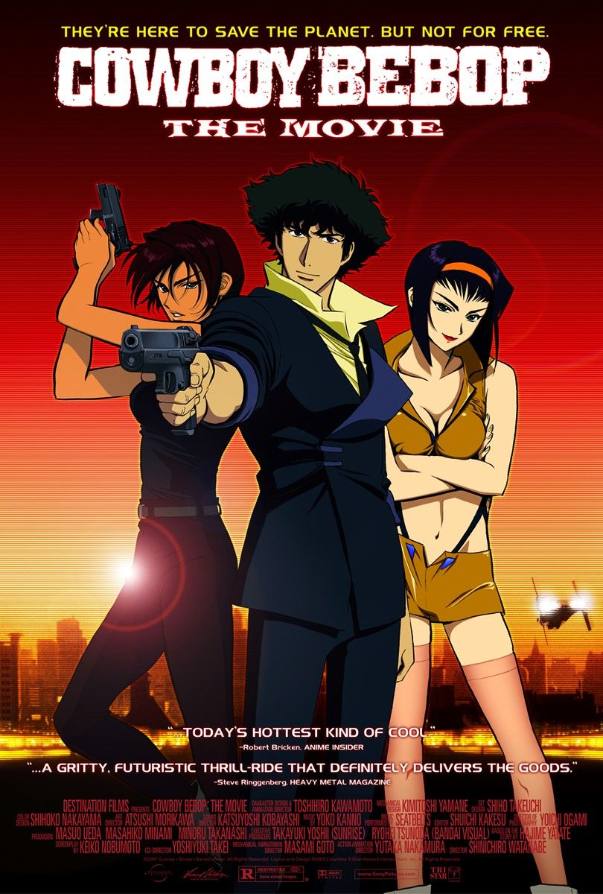

"Serial Experiments Lain" is a thought-provoking Japanese anime series
that explores the convergence of the virtual and real worlds, blurring
the boundaries between consciousness and technology. The story centers
around Lain Iwakura, a teenage girl who becomes increasingly involved
with the Wired, a global computer network that resembles the internet.
As Lain delves deeper into the mysteries of the Wired, she discovers
unsettling truths about reality, identity, and the nature of existence.
The narrative unfolds in a surreal and often disorienting manner,
incorporating psychological, philosophical, and cyberpunk elements.
Themes of isolation, the impact of technology on society, and the
fluidity of the self are pervasive throughout the series. "Serial
Experiments Lain" challenges conventional storytelling and invites
viewers to contemplate the nature of reality in the digital age. With
its enigmatic narrative, atmospheric visuals, and haunting soundtrack,
the series remains a cult classic that has left a lasting impression on
fans interested in existential themes and the intersection of humanity
with the virtual realm.
Cyberpunk: Edgerunners
"Cyberpunk: Edgerunners" is an upcoming anime series set in the
Cyberpunk 2077 universe. "Cyberpunk 2077" is a highly anticipated video
game developed by CD Projekt Red. The anime is a collaborative project
between CD Projekt Red and Studio Trigger, a renowned Japanese animation
studio. The series is expected to explore the themes of the "Cyberpunk
2077" game, including a dystopian future, advanced technology, and the
impact of cybernetic enhancements on society. "Edgerunners" refers to
individuals in the Cyberpunk universe who take on high-risk jobs for the
promise of high rewards. While the specific details of the anime's plot
were not extensively revealed at the time of my last update, it was
anticipated to provide additional depth to the Cyberpunk 2077 narrative.
Given the collaborative effort between a Western video game developer
and a Japanese animation studio, "Cyberpunk: Edgerunners" garnered
attention from both gaming and anime communities. For the most current
information about the anime, including its release status and any new
developments, I recommend checking official announcements from CD
Projekt Red or Studio Trigger.
Ergo Proxy
"Ergo Proxy" is a Japanese anime series that combines elements of
science fiction, cyberpunk, and existential philosophy. Created by
Manglobe, the series is directed by Shūkō Murase and originally aired in
2006. The narrative is set in a post-apocalyptic world where humans live
in domed cities to escape environmental degradation. The story follows
Re-l Mayer, an investigator in the city of Romdeau, as she explores
mysterious murders and encounters Proxy entities—mysterious beings with
unknown origins. Re-l is accompanied by an AutoReiv (android) named Iggy
and later partners with a mysterious immigrant named Vincent Law. As the
series unfolds, it delves into complex themes such as self-discovery,
the nature of humanity, and the relationship between humans and
artificial intelligence. "Ergo Proxy" is known for its atmospheric and
philosophical storytelling, drawing inspiration from various
philosophical works and literary sources. The narrative becomes
increasingly intricate as it explores the mysteries surrounding the
Proxies, the domed cities, and the characters' identities. "Ergo Proxy"
is
celebrated for its mature themes, unique visual style, and the depth of
its philosophical inquiries, making it a notable entry in the realm of
thought-provoking anime.
Paprika
"Paprika" is a Japanese animated science fiction film directed by
Satoshi Kon, based on the 1993 novel of the same name by Yasutaka
Tsutsui. The film was released in 2006 and is renowned for its stunning
visual style, dreamlike sequences, and exploration of the boundary
between dreams and reality. The story revolves around a revolutionary
device called the DC Mini, which allows therapists to enter and interact
with patients' dreams. Dr. Atsuko Chiba, who uses the alias Paprika when
she enters the dream world, is a researcher involved in the development
of the DC Mini. However, when the device is stolen, dreams begin to leak
into reality, leading to a surreal and increasingly unstable blending of
the two realms. "Paprika" is celebrated for its captivating and
imaginative animation, seamlessly transitioning between the dream and
waking worlds. The film explores themes of identity, the subconscious,
and the consequences of tampering with the boundaries of the mind. The
narrative is a visually stunning and intellectually engaging experience,
often challenging viewers to question the nature of reality and the
power of the human psyche.
Cowboy Bebop

"Cowboy Bebop" is a classic Japanese anime series that originally aired
in 1998. Created by Shinichirō Watanabe, it has become one of the most
influential and beloved anime series worldwide. The show is a space
western that blends elements of noir, jazz, and bounty hunting. The
narrative follows a group of bounty hunters aboard the spaceship Bebop:
Spike Spiegel, Jet Black, Faye Valentine, Edward, and Ein (a Pembroke
Welsh Corgi with enhanced intelligence). Each character has a mysterious
past and their own motivations for pursuing bounties across the galaxy.
The episodic nature of the series allows for a diverse range of
storytelling, incorporating themes such as existentialism, loneliness,
and the consequences of one's past. The series is also known for its
eclectic soundtrack featuring jazz and blues music, which complements
the atmosphere and tone of each episode. "Cowboy Bebop" is celebrated
for its stylish animation, complex characters, and well-choreographed
action sequences. It has left a lasting impact on the anime industry and
gained a dedicated fanbase over the years. The series has been praised
for its mature themes, narrative depth, and the timeless quality of its
storytelling.
Ghostin The Shell
"Ghost in the Shell" is a Japanese cyberpunk manga series written and
illustrated by Masamune Shirow, and it has been adapted into various
anime films and series. The story is set in a futuristic world where
humans can augment their bodies with cybernetic enhancements, and
artificial intelligence has reached a level where it challenges the
definition of consciousness. The narrative centers around Major Motoko
Kusanagi, a cyborg policewoman, and her team in Section 9, an elite
anti-cyberterrorism unit. They investigate complex cases involving
cybercrime, hacking, and the blurred boundaries between humanity and
artificial intelligence. One overarching theme is the exploration of
what it means to be human in a society where the line between man and
machine is increasingly indistinct. "Ghost in the Shell" raises
philosophical questions about the nature of identity, consciousness, and
the ethical implications of advanced technology. It combines action,
intrigue, and philosophical depth, making it a seminal work in the
cyberpunk genre. The series has significantly influenced discussions
about the intersection of technology and humanity in both science
fiction and real-world debates.
Akira
"Akira" is a landmark Japanese animated film based on the manga of the
same name by Katsuhiro Otomo. Released in 1988, it is widely considered
a groundbreaking and influential work in the anime genre, both for its
technical achievements and its impact on popular culture. Set in a
dystopian, post-apocalyptic Tokyo known as Neo-Tokyo, the story unfolds
in the aftermath of a mysterious explosion that devastated the city. The
narrative follows Kaneda, a motorcycle gang member, and Tetsuo, his
friend, who gains psychic abilities after a motorcycle accident. As
Tetsuo's powers grow, he becomes entangled in a government conspiracy
involving secret experiments, psychic phenomena, and the existence of
the mysterious Akira. "Akira" is celebrated for its stunning animation,
detailed and gritty urban landscapes, and its mature and
thought-provoking themes. It explores issues such as power, identity,
government control, and the consequences of unchecked technological
advancement.
Texhnolyze
"Texhnolyze" is a Japanese anime series that unfolds in the dystopian
city of Lux. Created by Hiroshi Hamasaki and Chiaki J. Konaka, the
narrative revolves around Ichise, a stoic prizefighter who becomes
entangled in the power struggles among the ruling class, the criminal
underworld, and an enigmatic organization. The city of Lux is marked by
a stark divide between its upper and lower levels, and technological
advancements, particularly the use of cybernetic enhancements known as
texhnolyzation, play a significant role. Ichise's journey is one of
survival and self-discovery as he grapples with the consequences of
texhnolyzation, the decay of society, and the mysteries surrounding Lux.
The series is a brooding exploration of existentialism, societal decay,
and the consequences of human ambition in a desolate future.
"Texhnolyze" is renowned for its atmospheric and contemplative
storytelling, making it a unique and thought-provoking entry in the
cyberpunk genre.
Mardock Scramble (2010-2012)
"Mardock Scramble" is a compelling and thought-provoking anime film
trilogy released between 2010 and 2012, based on the science fiction
novel series by Tow Ubukata. The narrative unfolds in a dystopian
future, where advanced technology intertwines with moral ambiguity and
societal decay. The story centers around Rune Balot, a young girl who
becomes the victim of a heinous crime, leading to her untimely death.
However, she is given a second chance at life through a mysterious and
controversial procedure called the Mardock Scramble. This procedure
reconstructs her body, enhancing her physical and mental abilities and
transforming her into a formidable force. As Rune grapples with her
newfound power and the trauma of her past, she becomes entangled in a
complex web of political intrigue, criminal underworld dealings, and
ethical questions surrounding the use of advanced technology. The
trilogy delves into themes of identity, justice, and the consequences of
playing with the boundaries of life and death. The visual landscape of
"Mardock Scramble" is both gritty and visually arresting, capturing the
essence of a society on the brink of collapse. The film series
masterfully combines elements of cyberpunk aesthetics with a deeply
emotional and philosophical narrative, creating a story that lingers in
the minds of its viewers. In conclusion, "Mardock Scramble" is a
captivating exploration of the human condition in a futuristic setting,
blending action, drama, and existential themes to deliver a compelling
and memorable anime experience. The trilogy's nuanced storytelling and
atmospheric visuals contribute to its status as a noteworthy entry in
the cyberpunk genre.
Steins Gate
"Steins Gate" is a Japanese anime series that intricately weaves
together elements of science fiction, time travel, and character-driven
storytelling. Airing in 2011, the narrative centers around Rintarou
Okabe, a self-proclaimed mad scientist, and his group of friends.
Operating from the Future Gadget Laboratory, they inadvertently create a
device capable of sending messages to the past. As the story unfolds,
the characters become entangled in a complex web of temporal paradoxes
and unintended consequences. Okabe discovers the potential ramifications
of altering the past and must navigate a series of timelines to prevent
a dark future. "Steins;Gate" explores themes of causality, free will,
and the emotional toll of time manipulation. The series stands out for
its well-developed characters, intricate plot twists, and a balance
between humor and profound philosophical inquiries. The anime captivates
viewers with its gripping narrative, making it a standout work in the
realm of science fiction and time travel storytelling.

.jpg)